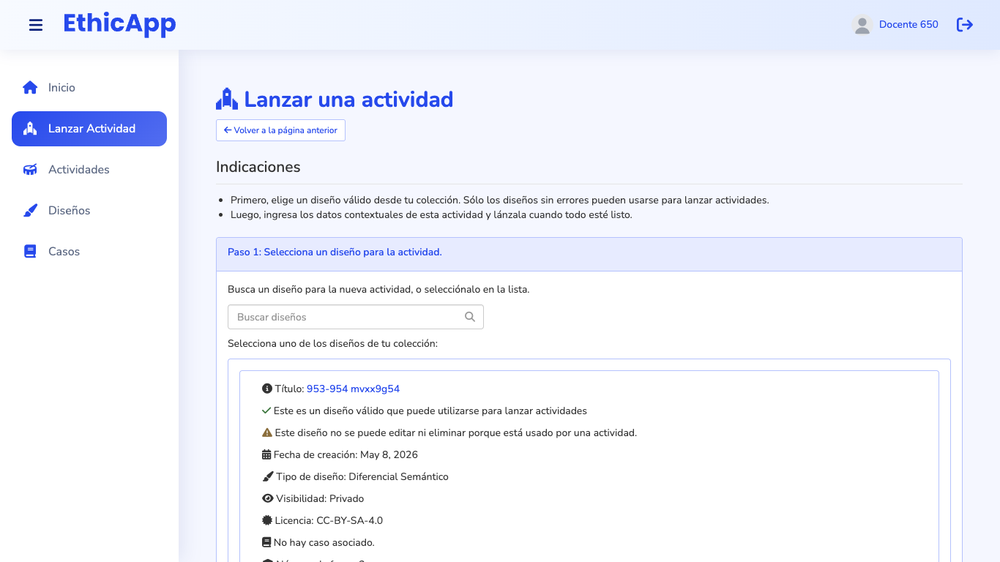
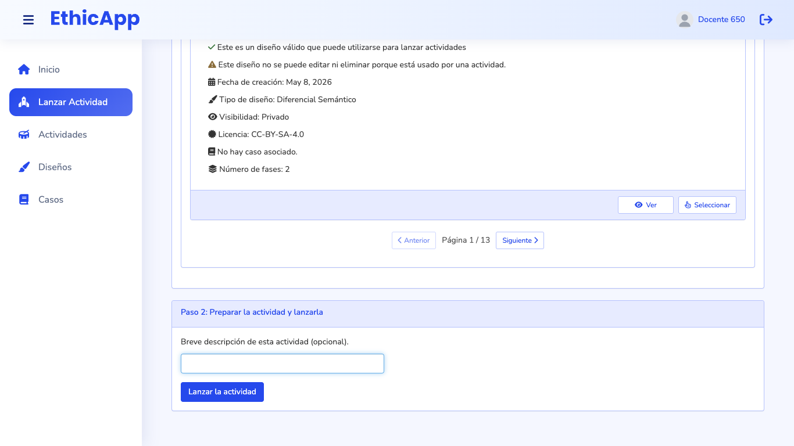
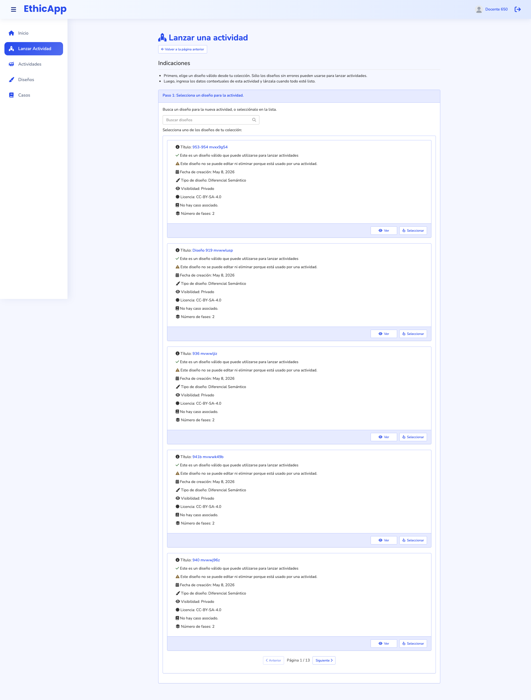

Low fidelity, for discussing the flow and how the space is shared. Each frame is drawn at its real viewport size and scaled down; the dashed line is the fold. Labels are in Spanish, as a teacher sees them in es-CL. Titles, cases and courses are fictional.
fold (bottom of the viewport)numbered notes, explained under each frame
Open questions (see the README):
Order of the list: most recently created first (today's order, by design id), or most recently launched first?
Should the description become required?
Should the dashboard's activity bar and the activity lists show the description next to the name, since the name is always the design's title?
AI services: one switch for the whole activity (drawn here), or one per service?
Should step 2 check whether each AI service is running before launch, instead of warning on the dashboard after it?
Today

1366 × 768, first screen: instructions, the search, and the top of the first design card.

After selecting a design, the page scrolls to step 2, at 2489 px. Step 2 does not say which design was chosen.

1920 × 1080, whole page: five 353 px cards per page, 13 pages for 65 designs.
A. 1920 × 1080: step 1, choose a design
Stepper. Two steps, always visible: "Elegir diseño" and "Identificar y lanzar". The current step is marked; a completed step shows a check and can be clicked to go back. It is a nav with aria-current="step".
Find a design. The search filters as the teacher types (title, case and tags), with no typeahead popup. The type chips narrow the list. The list states its order, "Más recientes primero", and its count.
One line per design, instead of a 353 px card: a radio, the title, the type, the number of phases and the case, then the AI services the design uses and when it was last launched. The whole row selects; there are no other buttons. 11 designs fit on the first screen.
Designs that cannot be launched are explained, not silently hidden. Designs with errors are not listed, and the footer says how many and links to Diseños. Archived designs are not listed either.
Preview of the selected design, so the teacher can check it without leaving the page: type, phases with their mode, questions and AI services, the case, and when it was created and last launched. "Ver diseño completo" opens the design in a new tab, so the wizard keeps its state.
Action bar, fixed to the bottom. It names the chosen design and moves on: "Siguiente: identificar la actividad". The button is disabled until a design is selected. Double-clicking a row also moves on.
B. 1366 × 768: step 1, narrower
Same structure, with a 380 px preview. The row drops the type and phases from its second line when they do not fit; the preview shows them.
6 designs fit on the first screen, against no full card today.
C. 1366 × 768: step 2, identify and launch
The chosen design stays in sight, with "Cambiar diseño" to go back to step 1. The selection, the search and the scroll position of step 1 are kept.
Description, to recognize the activity later. The label and the help say what it is for: course, section, semester or date. Under it, the descriptions this teacher used in their last activities, as chips that fill the field in one click.
AI services of the design, on by default. One switch turns them off for this activity only; the design does not change. The list shows which service runs in which phase. A design with no AI services shows one line instead: "Este diseño no usa servicios de IA."
How it will look: a preview of the activity card in Actividades, with the description highlighted. The name is the design's title, as today.
What launching does. Launching opens the activity's dashboard, and the design becomes read-only, as today; the note says so before launch, and that it can be duplicated to edit it.
"Lanzar actividad", the only primary action. While the launch runs, it shows "Preparando el panel…" and is disabled. If the design turns out to be invalid, the message appears in this bar.
D. 1024 × 768: step 1, one column
Below 1200 px the app's side menu folds, and the stepper drops its second lines.
The preview moves into the list: the selected row expands under itself with the phases, the AI services and the case. Selecting another row collapses it.
The action bar stays fixed to the bottom.
E. 1024 × 768: step 2, AI services off
AI services turned off. The services are struck through, and a note says what changes: the phases run without the tutor and the discussion agent; the design keeps them for later activities.
In one column the activity card preview sits under the form. The action bar keeps "Atrás" and "Lanzar actividad" in sight.